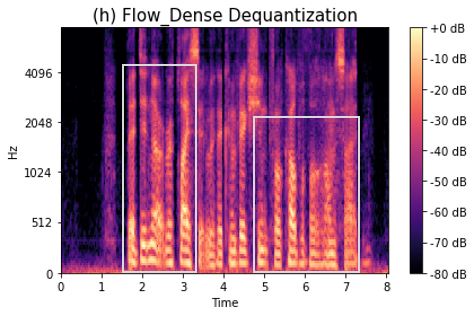
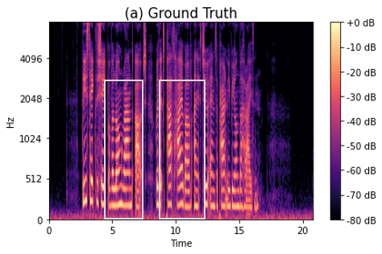

Audio Dequantization for High Fidelity Audio Generation in Flow-based Neural Vocoder
Abstract
In recent works, a flow-based network has shown significant improvement in real-time speech generation task. The sequence of flow operations allows the model to convert Gaussian latent variables into a waveform signal. However, training continuous density model on discrete data may lead to degraded performance of the model due to the topological difference between latent and actual distribution. To resolve this problem, we propose various audio dequantization methods in flow-based neural vocoder for high fidelity audio generation. Data dequantization is a well-known method in the image generation field, but such an effect in the audio domain is yet to be found. For this reason, we implement various dequantization methods and investigate the effect on the generated audio. In addition, we present various objective performance assessments and subjective evaluation to show that audio dequantization improves generated audio quality. From our experiments, we demonstrate that using audio dequantization can produce a better harmonic structure with less noise artifacts.
Demo
Male1 : “Many complicated ideas about the rainbow have been formed.”
Male2 : “They did not replace it with a conviction for culpable homicide."

Male3 : “I want to give everything to Rangers while I am with the club."
Female1 : "These take the shape of a long round arch, with its path high above, and its two ends apparently beyond the horizon.”

Female2 : “The actual primary rainbow observed is said to be the effect of super-imposition of a number of bows."
Female3 : "Aristotle thought that the rainbow was caused by reflection of the sun's rays by the rain."